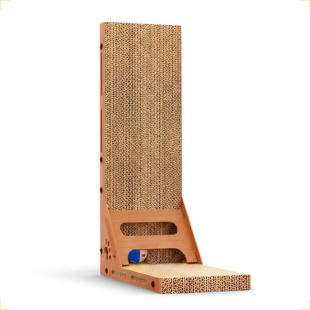

Arranhador em torre com bolinha para gatos

| Preço | R$ 47,90 |
|---|---|
| Marca | Animaux |
| Material | Papelão resistente e MDF |
| Medidas | 40cm x 25cm x 60cm |
| Benefícios | Ter um arranhador em casa é essencial para a saúde física e mental do seu gato. Ele direciona o instinto natural de arranhar para uma superfície segura e resistente, evitando danos aos seus móveis e proporcionando um espaço adequado para o gato se alongar, afiar suas garras e liberar energia acumulada. Isso ajuda a manter seu gato ativo e saudável, prevenindo o tédio e comportamentos indesejados |